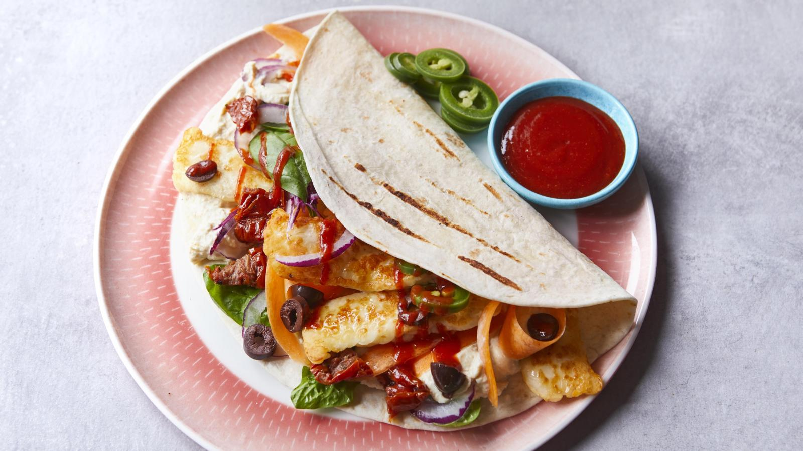

Easy halloumi wrap
ingredients:
- 100g/3½oz halloumi
- 1 tbsp olive oil
- 1 large soft flour tortilla wrap
- 3 tbsp hummus
- 1 large carrot, peeled into ribbons
- handful spinach leaves
- freshly ground black pepper
Steps:
- Slice the halloumi into 1cm/½in thick strips and season with pepper
- Heat the oil in a frying pan over a low–medium heat and fry the halloumi
strips for a few minutes, turning until all sides are golden. If the pan is too hot,
the outside of the halloumi might brown before the centre gets nice and soft, but you ca
n lift the pan off the heat to reduce the temperature briefly.
-
Warm the tortilla following pack instructions, then spread the hummus down the middle.
Layer the carrot, spinach and crispy halloumi strips, add any sauces or toppings you like,
then roll up the tortilla and eat while the halloumi is still warm.
